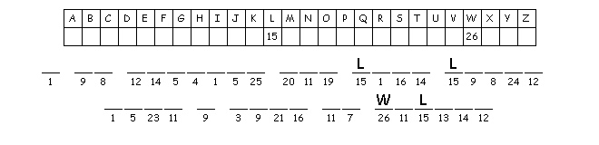

This Week:2 Kings 5:1-14 and Psalm 30 or Isaiah 66:10-14 and Psalm 66:1-9, Galatians 6:(1-6), 7-16, Luke 10:1-11, 16-20
Elementary School Pew-work
Use these words to fill in the blanks: lambs return crop greeting seventy-two peace workers moneybag
Later the Lord chose _____________ other followers and sent them out two by two to every town and village where he was about to go. He said to them: A large ________ is in the fields, but there are only a few ____________. Ask the Lord in charge of the harvest to send out workers to bring it in. Now go, but remember, I am sending you like __________ into a pack of wolves. Don't take along a _____________or a traveling bag or sandals. And don't waste time ____________ people on the road. As soon as you enter a home, say, "God bless this home with peace." If the people living there are __________-loving, your prayer for peace will bless them. But if they are not peace-loving, your prayer will ___________to you.
When the seventy-two followers returned, they were excited and said, "Lord, even the demons obeyed when we spoke in your name!
1. How did Jesus send the
disciples out?
__________________________________________________________________________
2. What ministry did Jesus tell
the disciples to do?
__________________________________________________________________________
3. What did Jesus tell the
disciples to take with them?
__________________________________________________________________________
4. How did the disciples feel
when they came
back?
__________________________________________________________________________
5. What did the disciples say
when they came
back?
__________________________________________________________________________

Next
week: Amos
7:7-17 and Psalm
82 or Deuteronomy
30:9-14 and Psalm
25:1-10, Colossians
1:1-14, Luke
10:25-37